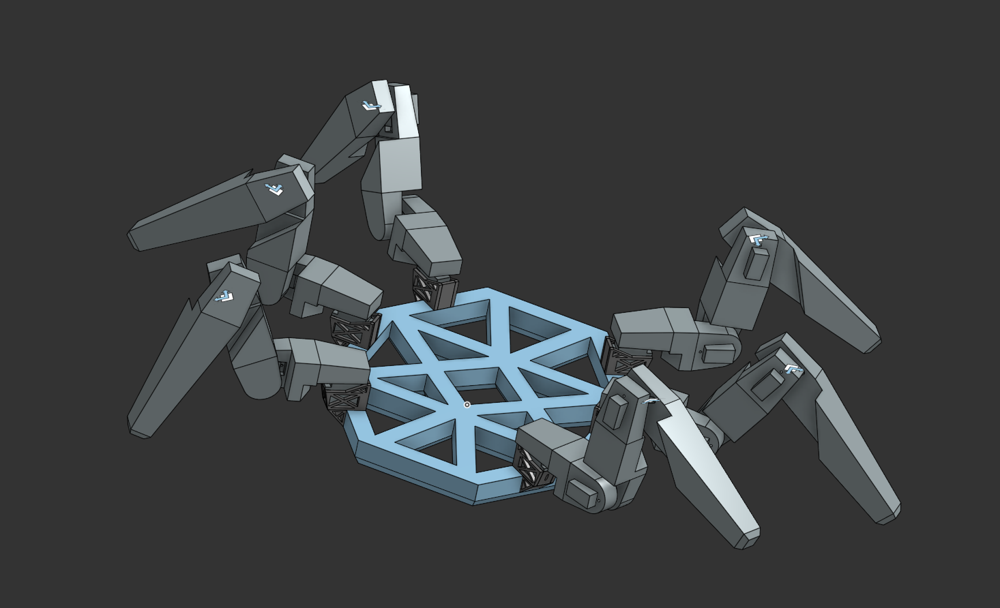
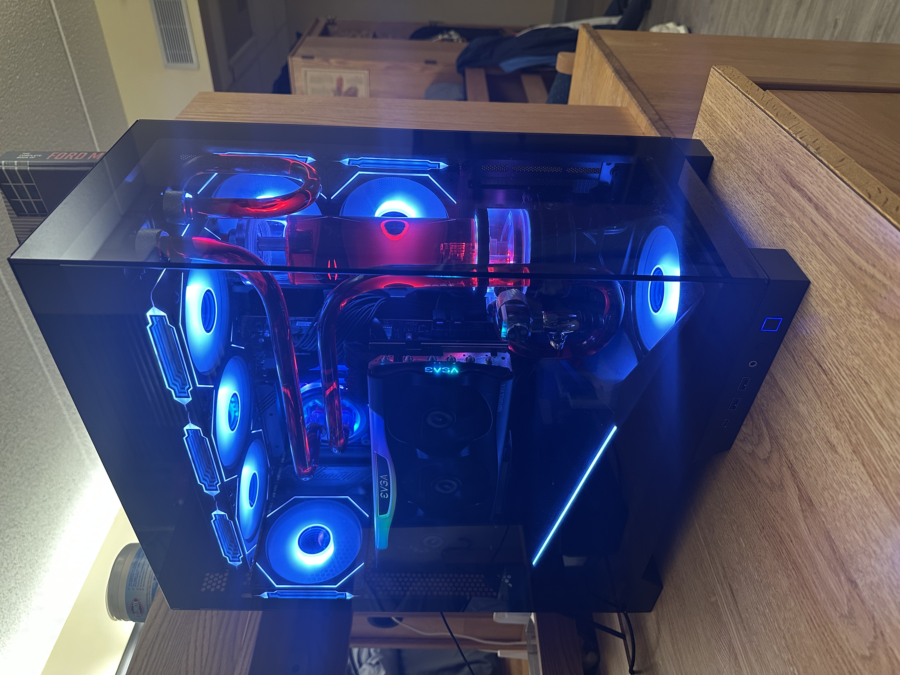
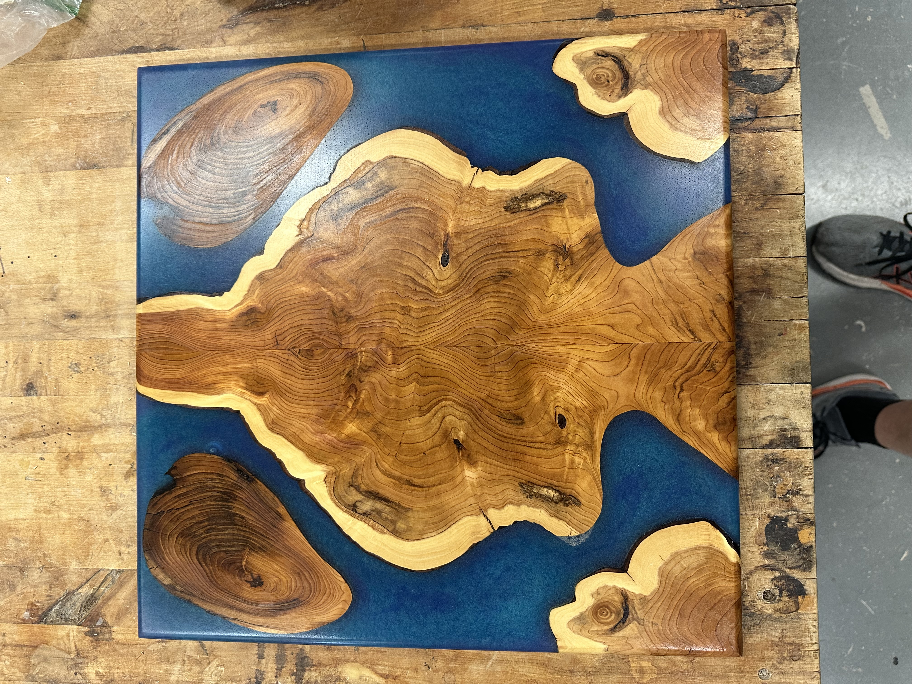
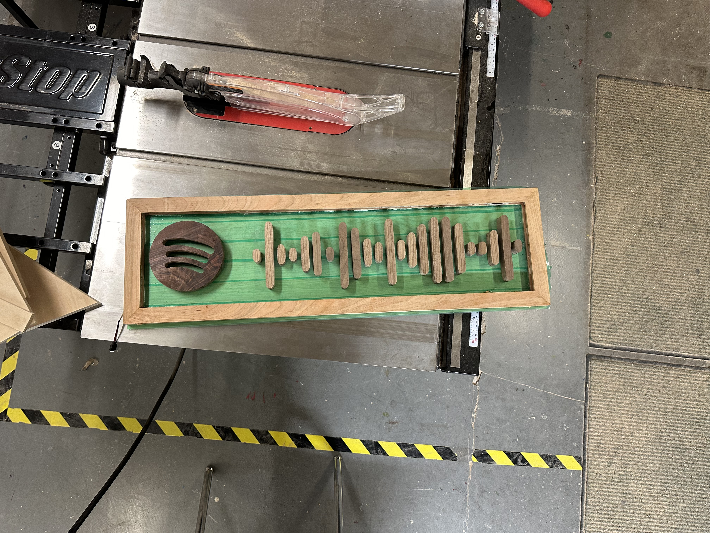
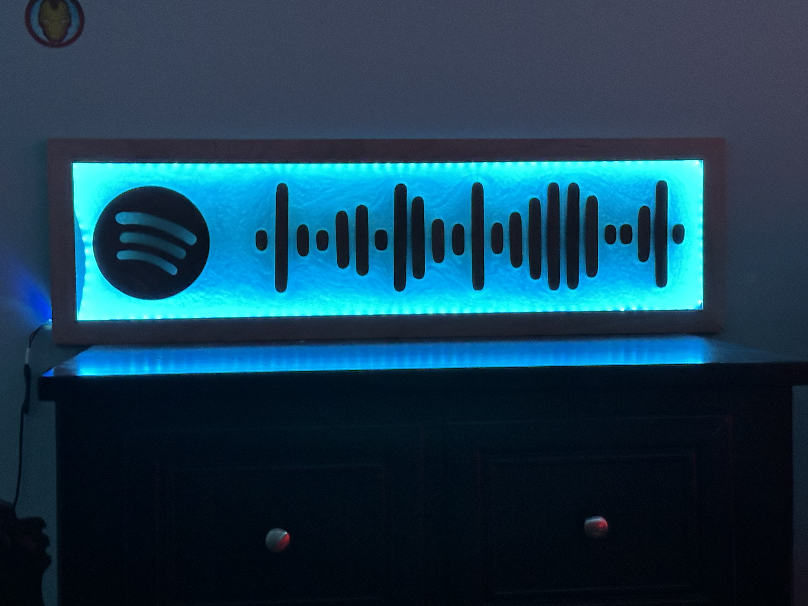

Mechanical & Robotics Engineer
Designing intelligent systems at the intersection of AI, robotics, and creative engineering
A diverse portfolio spanning autonomous systems, robotics, creative engineering, and IoT applications. Each project demonstrates deep technical expertise combined with practical problem-solving.
An intelligent hub-and-spoke AI platform with physical robotics extension—representing my work in autonomous systems design and innovative technology integration.
A comprehensive custom personal AI platform representing significant development effort in autonomous systems architecture. This is a hub-and-spoke architecture designed for extensibility and modular integration, managing multiple specialized subsystems with unified control, monitoring, and orchestration across diverse hardware and software components.
A six-legged autonomous locomotion platform extending the Axle AI ecosystem with physical presence and real-world environmental interaction. This custom-designed mechatronic robot represents a rare combination of advanced AI software integration with sophisticated mechanical robotics, enabling autonomous exploration, navigation, and dynamic environmental adaptation.

Deep technical expertise in hardware assembly, optimization, and structural engineering—demonstrated through complex custom builds and major construction projects.

A high-performance custom-built gaming PC that has undergone extensive teardown, rebuild, and optimization cycles. This project demonstrates deep knowledge of computer architecture, component compatibility, thermal management, and advanced troubleshooting techniques.
A comprehensive 250 sq ft residential deck reconstruction project completed in collaboration with a civil engineer. This major structural undertaking involved complete teardown and rebuild using advanced load-bearing physics calculations and engineering principles to create a stronger, more durable structure than the original.
Precision craftsmanship combining traditional woodworking with modern resin casting techniques. Showcasing materials science expertise and attention to detail.
A collection of precision woodworking and resin art projects, including the Spotify Barcode series and custom resin furniture pieces. Each piece demonstrates mastery of material properties, casting techniques, and finishing processes.



IoT-based vehicle safety monitoring system demonstrating full-stack development from embedded sensors to cloud analytics.
An intelligent IoT platform that tracks seatbelt compliance and passenger safety in real-time. Integrates embedded sensors with cloud-based analytics for comprehensive safety monitoring and fleet management integration.
This portfolio showcases technical depth across AI systems, robotics engineering, and creative applications of technology. Each project demonstrates problem-solving ability, systems thinking, and practical implementation skills.
Interested in discussing robotics, AI systems, or innovative projects? I'd love to hear from you.